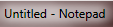

def type_in_app(app, message): app.focus() type(message) np1 = App.open("notepad"); c = App.open("calc"); wait(2) np1.focus() type("now the focus is on notepad\n") wait(1) c.focus() type("12+44") wait(2) np1.focus() type("back to notepad\n") wait(1) c.focus() type("45+4=") wait(1) c.close() np2 = App.open("notepad"); wait(2) np2.focus type("another notepad is now open\n") #Resize #bottomCorner = find(Pattern("1320338375450.png").similar(0.00).targetOffset(11,10)) #hover(bottomCorner) #mouseDown(Button.LEFT) #mouseMove(Env.getMouseLocation().offset(-100, -100)) #mouseUp() #Move wait(1) topLeft = find() hover(topLeft) mouseDown(Button.LEFT) mouseMove(Env.getMouseLocation().offset(-50, -200)) mouseUp() # Lets use a method instead to switch apps and type in data for n in range(0,5): type_in_app(np2, "\nmore\n\nmore\n\nmore\n\nmore\n") type_in_app(np1, "\n\n\nAnother Line\n\nAnd Another") popup("Now let's close them both withouth saving") np2.close() np1.close()